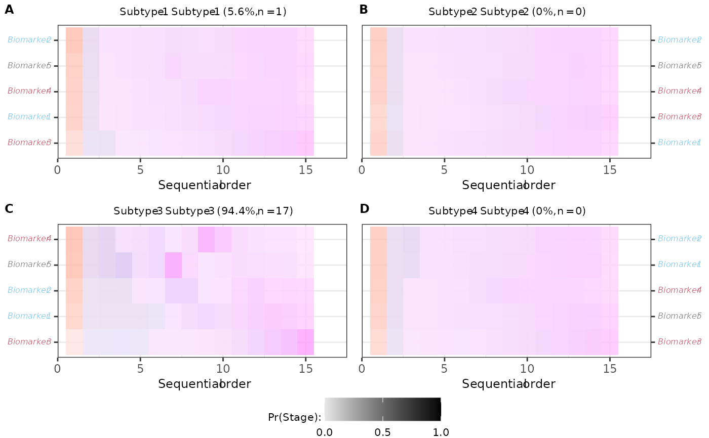

Plot SuStaIn Sequential Estimate
Usage
plot_compact_pvd_est2(
figs,
show_uncert = TRUE,
tile_height = 1,
tile_width = 1,
y_text_size = 9,
legend.position = "none",
scale_colors = c("red", "blue", "magenta", "darkgreen", "purple4"),
rel_heights = c(1, 0.1),
facet_label_prefix = names(figs),
facet_labels = compact_pvd_facet_labels(figs = figs, facet_label_prefix =
facet_label_prefix),
facet_label_size = 9,
vjust = 1.5,
...
)Arguments
- figs
todo
- show_uncert
Show the uncertainty in the sequential order. Logical.
- tile_height
todo
- tile_width
todo
- y_text_size
todo
- legend.position
todo
- scale_colors
todo
- rel_heights
relative heights of the plot and the legend
- facet_label_prefix
todo
- facet_labels
facet labels
- facet_label_size
integer: font size for cowplot facet labels
- vjust
vjust for cowplot labels
- ...
arguments passed to
tmp_func()
Examples
figs <- extract_figs_from_pickle(
n_s = 4,
dataset_name = "sample_data",
output_folder = fs::path_package("fxtas", "extdata/sim_data/"),
use_rds = TRUE
)
plot_compact_pvd_est2(
figs = figs,
tile_height = 1,
y_text_size = 6,
title_size = 8
)
